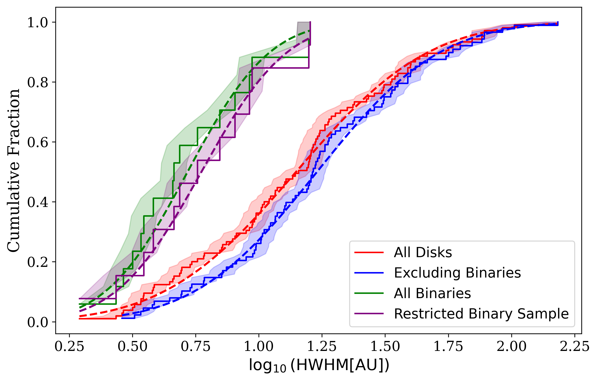
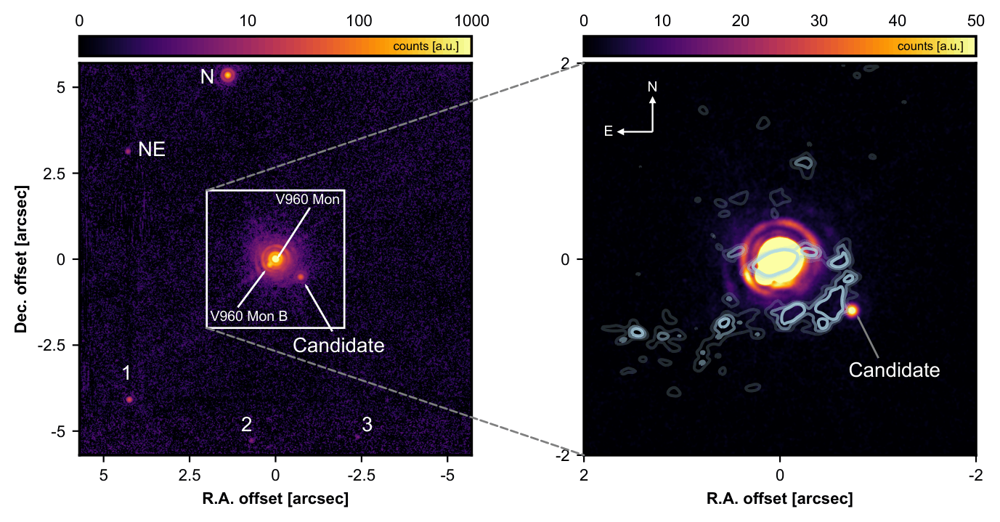
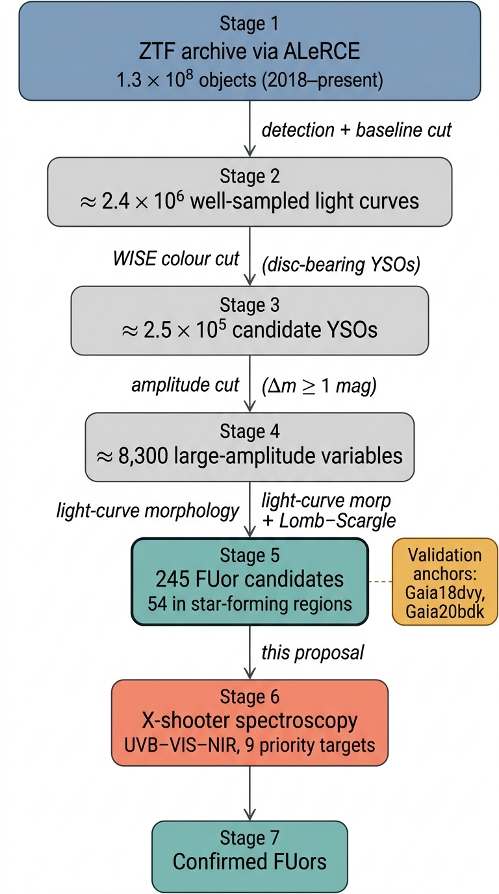
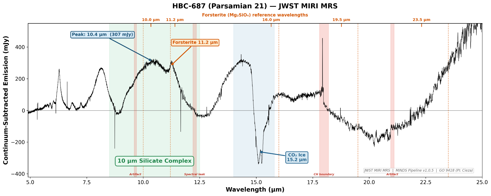
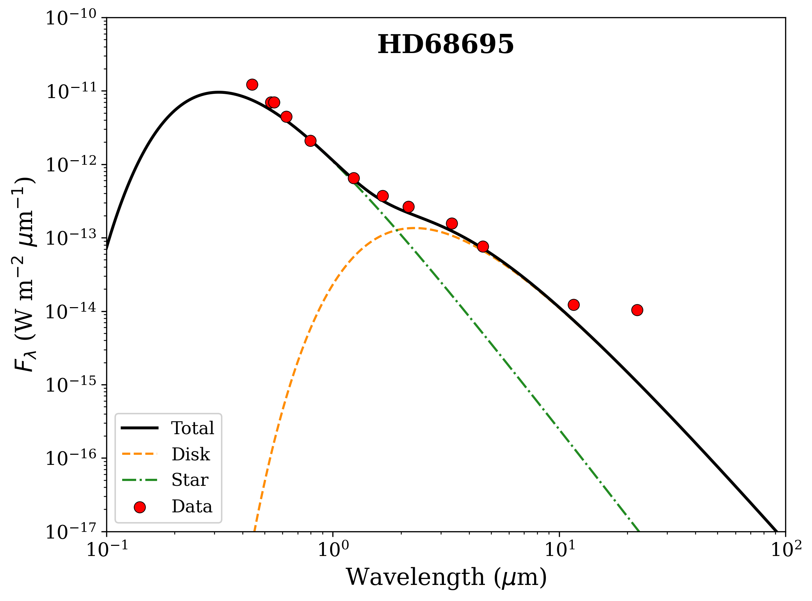
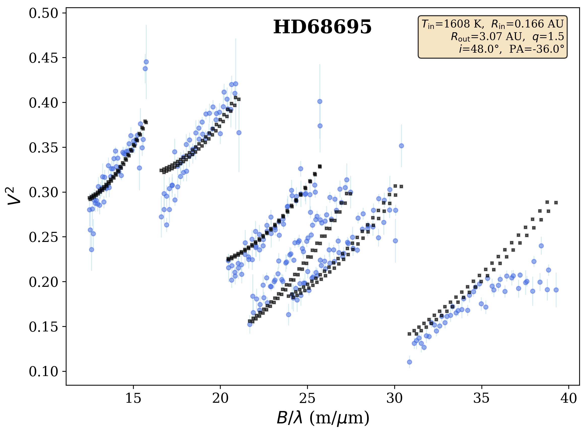
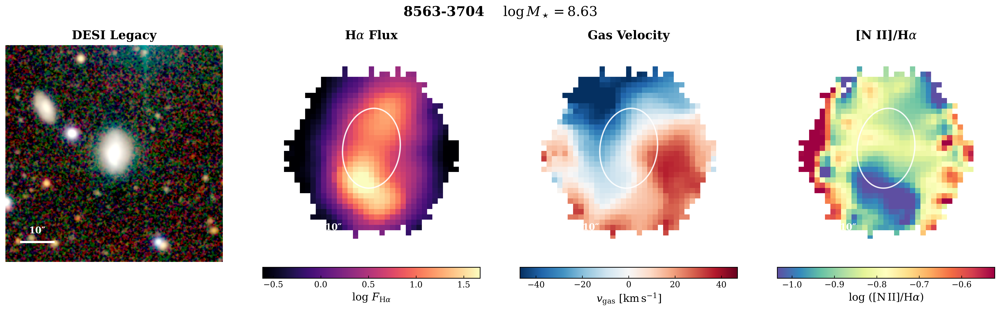

Building planetary systems, one scale at a time
A planetary system is assembled across an enormous range of scales, from hundreds of au in the outer disk down to a fraction of an au at the inner rim. I follow that whole range with observations, tracing how a disk of gas and dust reorganises itself into rings, gaps, companions, and eventually planets, from large ALMA surveys of disk demographics, through the eruptive young stars and embedded companions caught in the act of forming, down to the inner au resolved with optical and infrared interferometry.
The mass reservoir for planets
The outer disk holds most of the solid mass that planets are eventually built from, so its size and structure set the stage for everything that follows. I use high-frequency ALMA continuum imaging to measure how big disks are, how that depends on evolutionary stage, multiplicity, and environment, and what those trends reveal about how dust drifts, grows, and gets trapped.
As part of the ODISEA programme I produced a uniform set of size measurements for the brightest disks in Ophiuchus, turning a snapshot of disk sizes into an evolutionary story: which disks are compact because they are young, which because dust has already drifted inward, and how a stellar companion reshapes the disk it orbits.
- Uniform disk sizes across complete, brightness-selected samples.
- Size versus evolutionary class, multiplicity, and environment.
- Morphology linked to dust drift, grain growth, and dust traps.


Planets and companions caught forming
Some companions are still forming inside their disks, buried in dust and still accreting, which makes them both hard to detect and unusually informative. I use L-band high-contrast imaging with VLT/ERIS to search for these deeply embedded objects, focusing on systems where gravitational instability could fragment the disk.
The clearest example so far is V960 Mon, where my ERIS pipeline recovered a new companion candidate, the basis of an ESO press release in 2025. I combine the imaging with ALMA clumps, scattered-light spirals, and accretion signatures to judge whether a candidate is a real, bound, forming object, with second-epoch astrometry and contrast curves to back it up.
- L-band differential imaging tuned for embedded, accreting companions.
- Second-epoch astrometry to test common proper motion.
- Contrast curves that convert non-detections into mass limits.
FU Orionis outbursts in action
FU Orionis stars brighten by orders of magnitude when their disks dump material onto the star in a burst of accretion. These outbursts are short-lived and rare, a direct, time-resolved window onto how disks feed their stars and how dust responds to a sudden flood of heat and light. I work on both halves: finding new outbursts, and dissecting the disks of known ones.
To find them, I built a multi-stage pipeline that mines the full ZTF archive through the ALeRCE broker, recovering known events and yielding the largest uniform candidate sample so far, with real-time alerting designed to carry over to Rubin/LSST. To see what an outburst does to a disk, I combine JWST and ALMA observations of the FUor HBC 687.
- End-to-end ZTF/ALeRCE search, portable to Rubin/LSST alerting.
- Spectroscopic classification of candidates with NTT/EFOSC2.
- A combined JWST and ALMA view of the FUor HBC 687.
- Accepted VISIR time on dust crystallinity in outbursts.




Resolving the inner au
The innermost disk, the few tenths of an au where dust sublimates and where close companions clear cavities, is far too small to image directly even with the largest single telescopes. Optical and infrared interferometry gets there by combining light from separate telescopes to reach milliarcsecond resolution.
Much of this is modeling rather than imaging. I fit the interferometric observables, squared visibilities and closure phases, together with the broadband SED, using temperature-gradient and multi-component geometric models. That pins down inner-rim radii and temperatures, picks out asymmetry and binarity, and lets me study inner-disk structure across a sample of Herbig Ae/Be stars rather than one object at a time.
- Temperature-gradient models fit jointly to visibilities and the SED.
- Geometric models for star, inner rim, halo, and compact emission.
- Closure-phase diagnostics of asymmetry and binarity.
Metallicity across galaxies
Alongside the disk work, I have studied chemical abundances in nearby galaxies using integral-field spectroscopy from the SDSS-IV MaNGA survey. Spatially resolved emission-line maps make it possible to measure how metallicity varies across a galaxy rather than as a single global number, constraining how galaxies build up and redistribute their heavy elements over time.
The methods carry over directly from the disk analysis: systematic processing of many spectral cubes, emission-line fitting, signal-to-noise cuts, and uniform pipelines across a large sample. A different astrophysical setting, but the same instinct for turning many noisy datasets into clean, comparable measurements.
- Spatially resolved emission-line maps from MaNGA IFU data.
- Gas-phase metallicity from the N2 ([N II]/Hα) calibrator.
- Uniform cube processing and S/N selection across a large sample.

Instruments and facilities
The science depends on matching each question to the facility that can answer it, from millimeter interferometry for cold dust to optical interferometry for the inner au.
| Facility | Regime | What I use it for |
|---|---|---|
| ALMA (Bands 6–8) | Millimeter | Disk masses, sizes, and continuum substructure |
| VLT/ERIS | Near-infrared | High-contrast imaging of embedded companions |
| VLTI/GRAVITY | Near-infrared interferometry | Inner-disk geometry and temperature structure |
| CHARA (MIRC-X / MYSTIC) | Near-infrared interferometry | Sub-au inner-disk resolution and binarity |
| VLT/VISIR | Mid-infrared | The 10 µm silicate feature and dust crystallinity in outbursts |
| JWST/MIRI | Mid-infrared (IFU) | Dust, ice, and gas diagnostics in FUor disks |
| NTT/EFOSC2 | Optical | Spectroscopic classification of eruptive candidates |
Methods and pipelines
High-contrast imaging
Angular and reference differential imaging, PSF subtraction, injection-and-recovery tests, contrast-to-mass conversion, and precise astrometry for companion searches.
Optical/IR interferometry
Visibility and closure-phase modeling, temperature-gradient and multi-component fits, photometric consistency checks, and careful propagation of uncertainties.
Millimeter imaging
Uniform measurement of disk sizes and fluxes, control of beam and sensitivity effects, and sample-level statistics across complete disk samples.
Time-domain surveys
Large-scale archive queries through the ALeRCE broker, light-curve selection and periodicity tests, and real-time alerting built to scale to Rubin/LSST.
Spectral-cube analysis
JWST/MIRI IFU reduction, continuum fitting, extinction correction, and dust, ice, and outflow diagnostics for eruptive young stars.
Statistical inference
Bayesian parameter estimation with MCMC, bootstrap and Monte Carlo error analysis, and reproducible, instrument-adaptable pipelines with structured, versioned outputs.